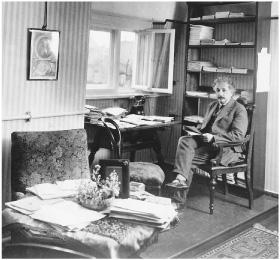

In his Berlin home study
Cosmology is the study of the universe as a whole, including its size and shape, its history and destiny, from one end to the other, from the beginning to the end of time. That’s a big topic. And it’s not a simple one. It’s not even simple to define what those concepts mean, or even if they have meaning. With the gravitational field equations in his general theory of relativity, Einstein laid the foundations for studying the nature of the universe, thereby becoming the primary founder of modern cosmology.
Helping him in this endeavor, at least in the early stages, was a profound mathematician and even more distinguished astrophysicist, Karl Schwarzschild, who directed the Potsdam Observatory. He read Einstein’s new formulation of general relativity and, at the beginning of 1916, set about trying to apply it to objects in space.
One thing made Schwarzschild’s work very difficult. He had volunteered for the German military during the war, and when he read Einstein’s papers he was stationed in Russia, projecting the trajectory of artillery shells. Nevertheless, he was also able to find time to calculate what the gravitational field would be, according to Einstein’s theory, around an object in space. It was the wartime counterpart to Einstein’s ability to come up with the special theory of relativity while examining patent applications for the synchronization of clocks.
In January 1916, Schwarzschild mailed his result to Einstein with the declaration that it permitted his theory “to shine with increased purity.” Among other things, it reconfirmed, with greater rigor, the success of Einstein’s equations in explaining Mercury’s orbit. Einstein was thrilled. “I would not have expected that the exact solution to the problem could be formulated so simply,” he replied. The following Thursday, he personally delivered the paper at the Prussian Academy’s weekly meeting.1
Schwarzschild’s first calculations focused on the curvature of space-time outside a spherical, nonspinning star. A few weeks later, he sent Einstein another paper on what it would be like inside such a star.
In both cases, something unusual seemed possible, indeed inevitable. If all the mass of a star (or any object) was compressed into a tiny enough space—defined by what became known as the Schwarzschild radius—then all of the calculations seemed to break down. At the center, spacetime would infinitely curve in on itself. For our sun, that would happen if all of its mass were compressed into a radius of less than two miles. For the earth, it would happen if all the mass were compressed into a radius of about one-third of an inch.
What would that mean? In such a situation, nothing within the Schwarzschild radius would be able to escape the gravitational pull, not even light or any other form of radiation. Time would also be part of the warpage as well, dilated to zero. In other words, a traveler nearing the Schwarzschild radius would appear, to someone on the outside, to freeze to a halt.
Einstein did not believe, then or later, that these results actually corresponded to anything real. In 1939, for example, he produced a paper that provided, he said, “a clear understanding as to why these ‘Schwarzschild singularities’ do not exist in physical reality.” A few months later, however, J. Robert Oppenheimer and his student Hart-land Snyder argued the opposite, predicting that stars could undergo a gravitational collapse.2
As for Schwarzschild, he never had the chance to study the issue further. Weeks after writing his papers, he contracted a horrible auto-immune disease while on the front, which ate away at his skin cells, and he died that May at age 42.
As scientists would discover after Einstein’s death, Schwarzschild’s odd theory was right. Stars could collapse and create such a phenomenon, and in fact they often did. In the 1960s, physicists such as Stephen Hawking, Roger Penrose, John Wheeler, Freeman Dyson, and Kip Thorne showed that this was indeed a feature of Einstein’s general theory of relativity, one that was very real. Wheeler dubbed them “black holes,” and they have been a feature of cosmology, as well as Star Trek episodes, ever since.3
Black holes have now been discovered all over the universe, including one at the center of our galaxy that is a few million times more massive than our sun. “Black holes are not rare, and they are not an accidental embellishment of our universe,” says Dyson. “They are the only places in the universe where Einstein’s theory of relativity shows its full power and glory. Here, and nowhere else, space and time lose their individuality and merge together in a sharply curved four-dimensional structure precisely delineated by Einstein’s equations.”4
Einstein believed that his general theory solved Newton’s bucket issue in a way that Mach would have liked: inertia (or centrifugal forces) would not exist for something spinning in a completely empty universe.* Instead, inertia was caused only by rotation relative to all the other objects in the universe. “According to my theory, inertia is simply an interaction between masses, not an effect in which ‘space’ of itself is involved, separate from the observed mass,” Einstein told Schwarzschild. “It can be put this way. If I allow all things to vanish, then according to Newton the Galilean inertial space remains; following my interpretation, however, nothing remains.”5
The issue of inertia got Einstein into a debate with one of the great astronomers of the time, Willem de Sitter of Leiden. Throughout 1916, Einstein struggled to preserve the relativity of inertia and Mach’s principle by using all sorts of constructs, including assuming various “border conditions” such as distant masses along the fringes of space that were, by necessity, unable to be observed. As de Sitter noted, that in itself would have been anathema to Mach, who railed against postulating things that could not possibly be observed.6
By February 1917, Einstein had come up with a new approach. “I have completely abandoned my views, rightly contested by you,” he wrote de Sitter. “I am curious to hear what you will have to say about the somewhat crazy idea I am considering now.”7 It was an idea that initially struck him as so wacky that he told his friend Paul Ehrenfest in Leiden, “It exposes me to the danger of being confined to a madhouse.” He jokingly asked Ehrenfest for assurances, before he came to visit, that there were no such asylums in Leiden.8
His new idea was published that month in what became yet another seminal Einstein paper, “Cosmological Considerations in the General Theory of Relativity.”9 On the surface, it did indeed seem to be based on a crazy notion: space has no borders because gravity bends it back on itself.
Einstein began by noting that an absolutely infinite universe filled with stars and other objects was not plausible. There would be an infinite amount of gravity tugging at every point and an infinite amount of light shining from every direction. On the other hand, a finite universe floating at some random location in space was inconceivable as well. Among other things, what would keep the stars and energy from flying off, escaping, and depleting the universe?
So he developed a third option: a finite universe, but one without boundaries. The masses in the universe caused space to curve, and over the expanse of the universe they caused space (indeed, the whole four-dimensional fabric of spacetime) to curve completely in on itself. The system is closed and finite, but there is no end or edge to it.
One method that Einstein employed to help people visualize this notion was to begin by imagining two-dimensional explorers on a two-dimensional universe, like a flat surface. These “flatlanders” can wander in any direction on this flat surface, but the concept of going up or down has no meaning to them.
Now, imagine this variation: What if these flatlanders’ two dimensions were still on a surface, but this surface was (in a way very subtle to them) gently curved? What if they and their world were still confined to two dimensions, but their flat surface was like the surface of a globe? As Einstein put it, “Let us consider now a two-dimensional existence, but this time on a spherical surface instead of on a plane.” An arrow shot by these flatlanders would still seem to travel in a straight line, but eventually it would curve around and come back—just as a sailor on the surface of our planet heading straight off over the seas would eventually return from the other horizon.
The curvature of the flatlanders’ two-dimensional space makes their surface finite, and yet they can find no boundaries. No matter what direction they travel, they reach no end or edge of their universe, but they eventually get back to the same place. As Einstein put it, “The great charm resulting from this consideration lies in the recognition that the universe of these beings is finite and yet has no limits.” And if the flatlanders’ surface was like that of an inflating balloon, their whole universe could be expanding, yet there would still be no boundaries to it.10
By extension, we can try to imagine, as Einstein has us do, how three-dimensional space can be similarly curved to create a closed and finite system that has no edge. It’s not easy for us three-dimensional creatures to visualize, but it is easily described mathematically by the non-Euclidean geometries pioneered by Gauss and Riemann. It can work for four dimensions of spacetime as well.
In such a curved universe, a beam of light starting out in any direction could travel what seems to be a straight line and yet still curve back on itself. “This suggestion of a finite but unbounded space is one of the greatest ideas about the nature of the world which has ever been conceived,” the physicist Max Born has declared.11
Yes, but what is outside this curved universe? What’s on the other side of the curve? That’s not merely an unanswerable question, it’s a meaningless one, just as it would be meaningless for a flatlander to ask what’s outside her surface. One could speculate, imaginatively or mathematically, about what things are like in a fourth spatial dimension, but other than in science fiction it is not very meaningful to ask what’s in a realm that exists outside of the three spatial dimensions of our curved universe.12
This concept of the cosmos that Einstein derived from his general theory of relativity was elegant and magical. But there seemed to be one hitch, a flaw that needed to be fixed or fudged. His theory indicated that the universe would have to be either expanding or contracting, not staying static. According to his field equations, a static universe was impossible because the gravitational forces would pull all the matter together.
This did not accord with what most astronomers thought they had observed. As far as they knew, the universe consisted only of our Milky Way galaxy, and it all seemed pretty stable and static. The stars appeared to be meandering gently, but not receding rapidly as part of an expanding universe. Other galaxies, such as Andromeda, were merely unexplained blurs in the sky. (A few Americans working at the Lowell Observatory in Arizona had noticed that the spectra of some mysterious spiral nebulae were shifted to the red end of the spectrum, but scientists had not yet determined that these were distant galaxies all speeding away from our own.)
When the conventional wisdom of physics seemed to conflict with an elegant theory of his, Einstein was inclined to question that wisdom rather than his theory, often to have his stubbornness rewarded. In this case, his gravitational field equations seemed to imply—indeed, screamed out—that the conventional thinking about a stable universe was wrong and should be tossed aside, just as Newton’s concept of absolute time was.13
Instead, this time he made what he called a “slight modification” to his theory. To keep the matter in the universe from imploding, Einstein added a “repulsive” force: a little addition to his general relativity equations to counterbalance gravity in the overall scheme.
In his revised equations, this modification was signified by the Greek letter lambda, λ, which he used to multiply his metric tensor gμν in a way that produced a stable, static universe. In his 1917 paper, he was almost apologetic: “We admittedly had to introduce an extension of the field equations that is not justified by our actual knowledge of gravitation.”
He dubbed the new element the “cosmological term” or the “cosmological constant” (kosmologische Glied was the phrase he used). Later,* when it was discovered that the universe was in fact expanding, Einstein would call it his “biggest blunder.” But even today, in light of evidence that the expansion of the universe is accelerating, it is considered a useful concept, indeed a necessary one after all.14
During five months in 1905, Einstein had upended physics by conceiving light quanta, special relativity, and statistical methods for showing the existence of atoms. Now he had just completed a more prolonged creative slog, from the fall of 1915 to the spring of 1917, which Dennis Overbye has called “arguably the most prodigious effort of sustained brilliance on the part of one man in the history of physics.” His first burst of creativity as a patent clerk had appeared to involve remarkably little anguish. But this later one was an arduous and intense effort, one that left him exhausted and wracked with stomach pains.15
During this period he generalized relativity, found the field equations for gravity, found a physical explanation for light quanta, hinted at how the quanta involved probability rather than certainty,† and came up with a concept for the structure of the universe as a whole. From the smallest thing conceivable, the quantum, to the largest, the cosmos itself, Einstein had proven a master.
For general relativity, there was a dramatic experimental test that was possible, one that had the potential to dazzle and help heal a war-weary world. It was based on a concept so simple that everyone could understand it: gravity would bend light’s trajectory. Specifically, Einstein predicted the degree to which light from a distant star would be observed to curve as it went through the strong gravitational field close to the sun.
To test this, astronomers would have to plot precisely the position of a star in normal conditions. Then they would wait until the alignments were such that the path of light from that star passed right next to the sun. Did the star’s position seem to shift?
There was one exciting challenge. This observation required a total eclipse, so that the stars would be visible and could be photographed. Fortunately, nature happened to make the size of the sun and moon just properly proportional so that every few years there are full eclipses observable at times and places that make them ideally suited for such an experiment.
Einstein’s 1911 paper, “On the Influence of Gravity on the Propagation of Light,” and his Entwurf equations the following year, had calculated that light would undergo a deflection of approximately (allowing for some data corrections subsequently made) 0.85 arc-second when it passed near the sun, which was the same as would be predicted by an emission theory such as Newton’s that treated light as particles. As previously noted, the attempt to test this during the August 1914 eclipse in the Crimea had been aborted by the war, so Einstein was saved the potential embarrassment of being proved wrong.
Now, according to the field equations he formulated at the end of 1915, which accounted for the curvature of spacetime caused by gravity, he had come up with twice that deflection. Light passing next to the sun should be bent, he said, by about 1.7 arc-seconds.
In his 1916 popular book on relativity, Einstein issued yet another call for scientists to test this conclusion. “Stars ought to appear to be displaced outwards from the sun by 1.7 seconds of arc, as compared with their apparent position in the sky when the sun is situated at another part of the heavens,” he said.“The examination of the correctness or otherwise of this deduction is a problem of the greatest importance, the early solution of which is to be expected of astronomers.”16
Willem de Sitter, the Dutch astrophysicist, had managed to send a copy of Einstein’s general relativity paper across the English Channel in 1916 in the midst of the war and get it to Arthur Eddington, who was the director of the Cambridge Observatory. Einstein was not wellknown in England, where scientists then took pride in either ignoring or denigrating their German counterparts. Eddington became an exception. He embraced relativity enthusiastically and wrote an account in English that popularized the theory, at least among scholars.
Eddington consulted with the Astronomer Royal, Sir Frank Dyson, and came up with the audacious idea that a team of English scientists should prove the theory of a German, even as the two nations were at war. In addition, it would help solve a personal problem for Eddington. He was a Quaker and, because of his pacifist faith, faced imprisonment for refusing military service in England. (In 1918, he was 35 years old, still subject to conscription.) Dyson was able to convince the British Admiralty that Eddington could best serve his nation by leading an expedition to test the theory of relativity during the next full solar eclipse.
That eclipse would occur on May 29, 1919, and Dyson pointed out that it would be a unique opportunity. The sun would then be amid the rich star cluster known as the Hyades, which we ordinary stargazers recognize as the center of the constellation Taurus. But it would not be convenient. The eclipse would be most visible in a path that stretched across the Atlantic near the equator from the coast of Brazil to Equatorial Africa. Nor would it be easy. As the expedition was being considered in 1918, there were German U-boats in the region, and their commanders were more interested in the control of the seas than in the curvature of the cosmos.
Fortunately, the war ended before the expeditions began. In early March 1919, Eddington sailed from Liverpool with two teams. One group split off to set up their cameras in the isolated town of Sobral in the Amazon jungle of northern Brazil. The second group, which included Eddington, sailed for the tiny island of Principe, a Portuguese colony a degree north of the equator just off the Atlantic coast of Africa. Eddington set up his equipment on a 500-foot bluff on the island’s north tip.17
The eclipse was due to begin just after 3:13 p.m. local time on Principe and last about five minutes. That morning it rained heavily. But as the time of the eclipse approached, the sky started to clear. The heavens insisted on teasing and tantalizing Eddington at the most important minutes of his career, with the remaining clouds cloaking and then revealing the elusive sun.
“I did not see the eclipse, being too busy changing plates, except for one glance to make sure it had begun and another halfway through to see how much cloud there was,” Eddington noted in his diary. He took sixteen photographs. “They are all good of the sun, showing a very remarkable prominence; but the cloud has interfered with the star images.” In his telegram back to London that day, he was more telegraphic: “Through cloud, hopeful. Eddington.”18
The team in Brazil had better weather, but the final results had to wait until all of the photographic plates from both places could be shipped back to England, developed, measured, and compared. That took until September, with Europe’s scientific cognoscenti waiting eagerly. To some spectators, it took on the postwar political coloration of a contest between the English theory of Newton, predicting about 0.85 arc-second deflection, and the German theory of Einstein, predicting a 1.7 arc-seconds deflection.
The photo finish did not produce an immediately clear result. One set of particularly good pictures taken in Brazil showed a deflection of 1.98 arc-seconds. Another instrument, also at the Brazil location, produced photographs that were a bit blurrier, because heat had affected its mirror; they indicated a 0.86 deflection, but with a higher margin of error. And then there were Eddington’s own plates from Principe. These showed fewer stars, so a series of complex calculations were used to extract some data. They seemed to indicate a deflection of about 1.6 arc-seconds.
The predictive power of Einstein’s theory—the fact that it offered up a testable prediction—perhaps exercised a power over Eddington, whose admiration for the mathematical elegance of the theory caused him to believe in it deeply. He discarded the lower value coming out of Brazil, contending that the equipment was faulty, and with a slight bias toward his own fuzzy results from Africa got an average of just over 1.7 arc-seconds, matching Einstein’s predictions. It wasn’t the cleanest confirmation, but it was enough for Eddington, and it turned out to be valid. He later referred to getting these results as the greatest moment of his life.19
In Berlin, Einstein put on an appearance of nonchalance, but he could not completely hide his eagerness as he awaited word. The downward spiral of the German economy in 1919 meant that the elevator in his apartment building had been shut down, and he was preparing for a winter with little heat. “Much shivering lies ahead for the winter,” he wrote his ailing mother on September 5. “There is still no news about the eclipse.” In a letter a week later to his friend Paul Ehrenfest in Holland, Einstein ended with an affected casual question: “Have you by any chance heard anything over there about the English solar-eclipse observation?”20
Just by asking the question Einstein showed he was not quite as sanguine as he tried to appear, because his friends in Holland would certainly have already sent him such news if they had it. Finally they did. On September 22, 1919, Lorentz sent a cable based on what he had just heard from a fellow astronomer who had talked to Eddington at a meeting: “Eddington found stellar shift at solar limb, tentative value between nine-tenths of a second and twice that.” It was wonderfully ambiguous. Was it a shift of 0.85 arc-second, as Newton’s emission theory and Einstein’s discarded 1912 theory would have it? Or twice that, as he now predicted?
Einstein had no doubts. “Today some happy news,” he wrote his mother. “Lorentz telegraphed me that the British expeditions have verified the deflection of light by the sun.”21 Perhaps his confidence was partly an attempt to cheer up his mother, who was suffering from stomach cancer. But it is more likely that it was because he knew his theory was correct.
Einstein was with a graduate student, Ilse Schneider, shortly after Lorentz’s news arrived. “He suddenly interrupted the discussion,” she later recalled, and reached for the telegram that was lying on a window sill. “Perhaps this will interest you,” he said, handing it to her.
Naturally she was overjoyed and excited, but Einstein was quite calm. “I knew the theory was correct,” he told her.
But, she asked, what if the experiments had shown his theory to be wrong?
He replied, “Then I would have been sorry for the dear Lord; the theory is correct.”22
As more precise news of the eclipse results spread, Max Planck was among those who gently noted to Einstein that it was good to have his own confidence confirmed by some actual facts. “You have already said many times that you never personally doubted what the result would be,” Planck wrote, “but it is beneficial, nonetheless, if now this fact is indubitably established for others as well.” For Einstein’s stolid patron, the triumph had a transcendent aspect. “The intimate union between the beautiful, the true and the real has again been proved.” Einstein replied to Planck with a veneer of humility: “It is a gift from gracious destiny that I have been allowed to experience this.”23
Einstein’s celebratory exchange with his closer friends in Zurich was more lighthearted. The physics colloquium there sent him a piece of doggerel:
All doubts have now been spent
At last it has been found:
Light is naturally bent
To Einstein’s great renown!24
To which Einstein replied a few days later, referring to the eclipse:
Light and heat Mrs. Sun us tenders
Yet loves not he who broods and ponders.
So she contrives many a year
How she may hold her secret dear!
Now came the lunar visitor kind;
For joy, she almost forgot to shine.
Her deepest secrets too she lost
Eddington, you know, has snapped a shot.25
In defense of Einstein’s poetic prowess, it should be noted that his verse works better in German, in which the last two lines end with “gekommen” and “aufgenommen.”
The first unofficial announcement came at a meeting of the Dutch Royal Academy. Einstein sat proudly onstage as Lorentz described Eddington’s findings to an audience of close to a thousand cheering students and scholars. But it was a closed meeting with no press, so the leaks about the results merely added to the great public anticipation leading up to the official announcement scheduled for two weeks later in London.
The distinguished members of the Royal Society, Britain’s most venerable scientific institution, met along with colleagues from the Royal Astronomical Society on the afternoon of November 6, 1919, at Burlington House in Piccadilly, for what they knew was likely to be a historic event. There was only one item on the agenda: the report on the eclipse observations.
Sir J. J. Thomson, the Royal Society’s president and discoverer of the electron, was in the chair. Alfred North Whitehead, the philosopher, had come down from Cambridge and was in the audience, taking notes. Gazing down on them from an imposing portrait in the great hall was Isaac Newton. “The whole atmosphere of tense interest was exactly that of the Greek drama,” Whitehead recorded. “We were the chorus commenting on the decree of destiny . . . and in the background the picture of Newton to remind us that the greatest of scientific generalizations was, now, after more than two centuries, to receive its first modification.”26
The Astronomer Royal, Sir Frank Dyson, had the honor of presenting the findings. He described in detail the equipment, the photographs, and the complexities of the calculations. His conclusion, however, was simple. “After a careful study of the plates, I am prepared to say that there can be no doubt that they confirm Einstein’s prediction,” he announced. “The results of the expeditions to Sobral and Principe leave little doubt that a deflection of light takes place in the neighborhood of the sun and that it is of the amount demanded by Einstein’s generalized theory of relativity.”27
There was some skepticism in the room. “We owe it to that great man to proceed very carefully in modifying or retouching his law of gravitation,” cautioned Ludwig Silberstein, gesturing at Newton’s portrait. But it was the commanding giant J. J. Thomson who set the tone. “The result is one of the greatest achievements of human thought,” he declared.28
Einstein was back in Berlin, so he missed the excitement. He celebrated by buying a new violin. But he understood the historic impact of the announcement that the laws of Sir Isaac Newton no longer fully governed all aspects of the universe. “Newton, forgive me,” Einstein later wrote, noting the moment. “You found the only way which, in your age, was just about possible for a man of highest thought and creative power.”29
It was a grand triumph, but not one easily understood. The skeptical Silberstein came up to Eddington and said that people believed that only three scientists in the world understood general relativity. He had been told that Eddington was one of them.
The shy Quaker said nothing. “Don’t be so modest, Eddington!” said Silberstein.
Replied Eddington, “On the contrary. I’m just wondering who the third might be.”30